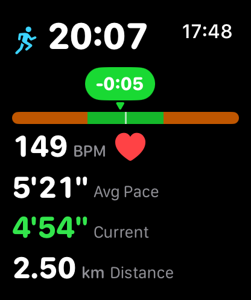
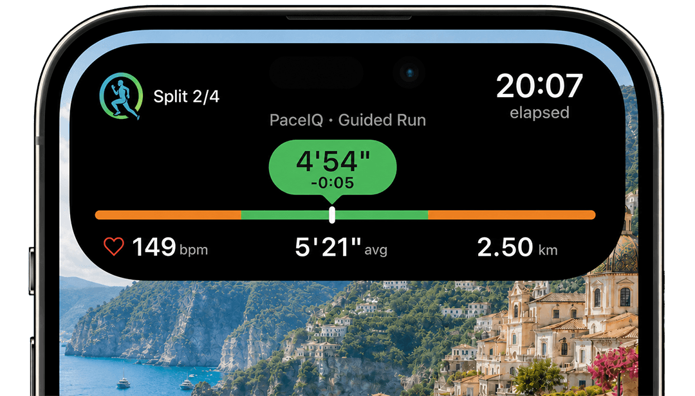
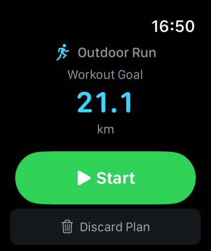
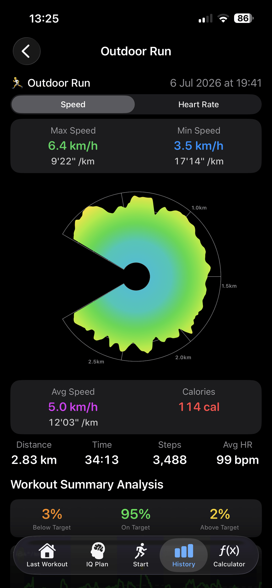
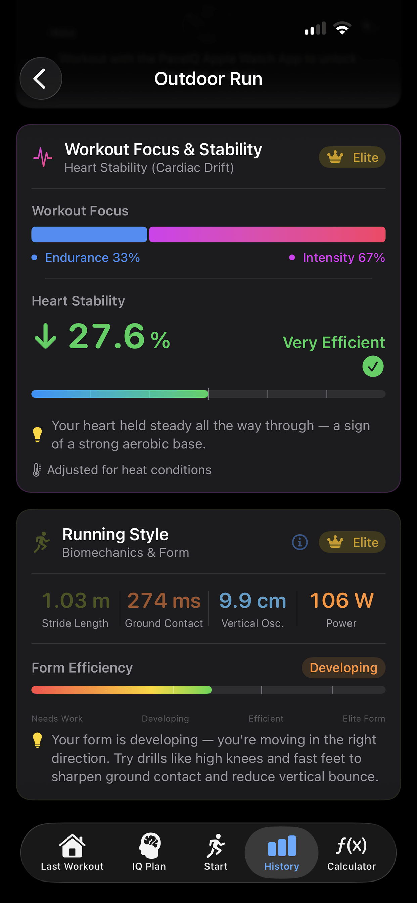
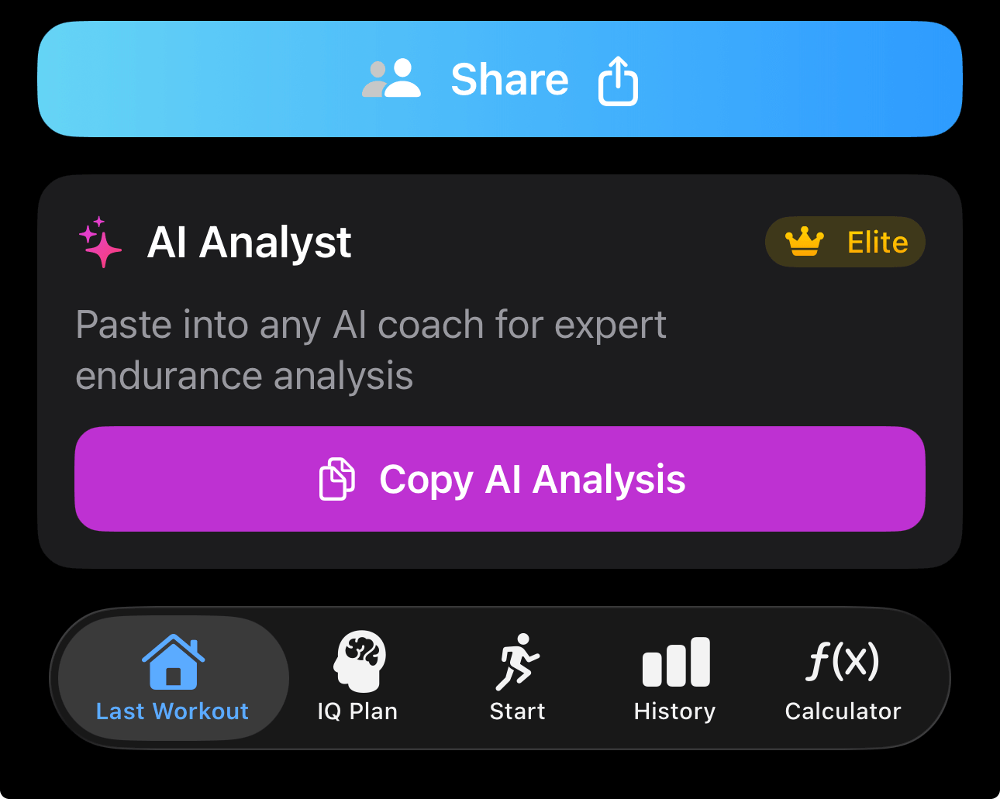
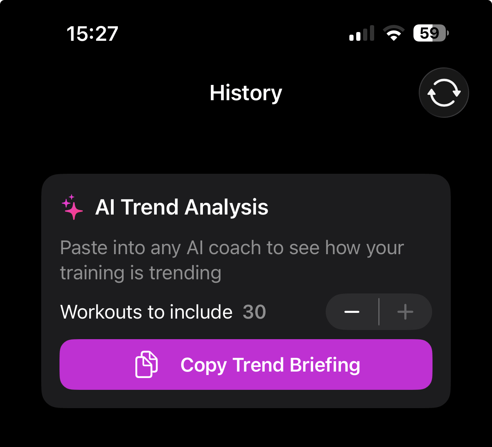

1
Plan a guided workout in IQ Plan
Pick run or walk, a goal and a pace: your own, or one the app predicts from your workout history. Go as it is, or shape the session segment by segment, or let a built-in template lay it out in one tap.
PaceIQ is a running and walking app for Apple Watch and iPhone that puts the personal experience first. You can share a workout if you want to, but there is no feed, no leaderboard and no PaceIQ account.
Made by Sagi Gal, PaceIQ's solo developer. Apple Watch and iPhone only.


Three steps, and the coach talks to you from the first kilometre.
Pick run or walk, a goal and a pace: your own, or one the app predicts from your workout history. Go as it is, or shape the session segment by segment, or let a built-in template lay it out in one tap.
One tap syncs the plan to the Watch, where it waits for you. Or start it on the iPhone alone (iOS 26 or later) and the coach speaks through your headphones.

Speed up, ease off, back on track: spoken cues that follow your own drift, correcting you once you have really left your pace, not at every wobble. The screen shows where you are inside your pace window.
A two-minute read. Everything here is in the shipping app.
A year, not a month. Pro is $9.99 a year: full workout history, the advanced workout calculator and the detailed heart-rate graph. Elite adds the personal coach on your Watch, the physiological and running-style analysis, and the AI briefings. The free tier shows your last workout.
No multi-week training plans and no social network. It is built for Apple devices only. An Apple Watch gives you the complete experience. An iPhone alone, on iOS 26 or later, gives you the full guided, spoken workout, with a Live Activity card on the Lock Screen and in the Dynamic Island, and a Bluetooth heart-rate strap adds the heart-rate analytics. Running-style analysis needs the Watch, and the app says so instead of showing numbers it does not have.




Each session comes in three pace tiers. Pick the tier closest to your current race times, download the file on your iPhone, and PaceIQ opens it as a plan. Warm-up, recoveries and cool-down are free segments with no pace target.
Training paces follow the Daniels VDOT tables (VDOT 53, 49 and 45). The paces are in the file; you can change any of them in IQ Plan before you run.
The weekly threshold staple. 2.5 km warm-up, five 1 km reps at threshold pace with 200 m jogs, 1.5 km cool-down.
Three-to-five-minute reps with a recovery shorter than the rep. 2.5 km warm-up, five 1000 m reps at 5K pace with 400 m jogs, 1.5 km cool-down.
Race-specific endurance: finishing faster than marathon pace when tired. 2 km warm-up, 10 km easy, 6 km at marathon pace, 2 km at threshold pace, 1 km cool-down.
Goal-pace rehearsal about eight weeks out. 2 km warm-up, three 4 km reps at half-marathon pace with 800 m jogs, 1.5 km cool-down.
Everything a review needs, in one place. If something is missing, write and it will be added.
Icon with transparency (1024 px) and ten screenshots, or pick single files below.
{kind=link}
{kind=link}
{kind=link}
{kind=link}
{kind=link}
{kind=link}
{kind=link}
{kind=link}
{kind=link}
{kind=link}
{kind=link}